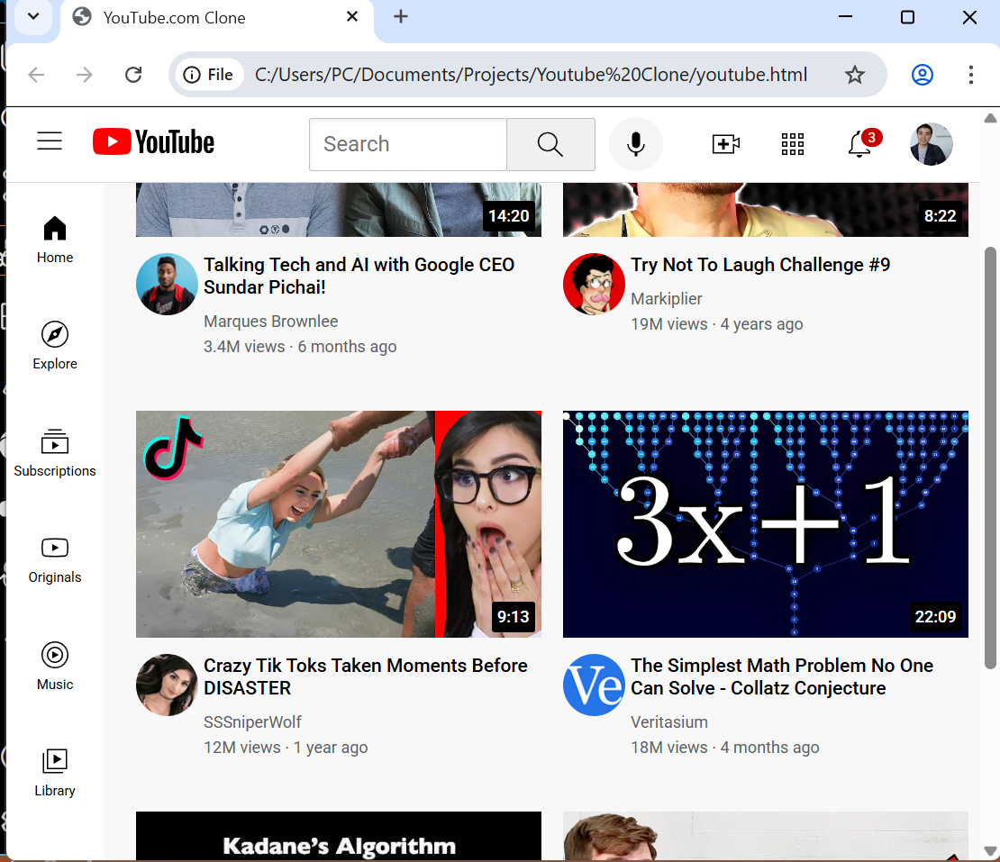

Web Development
Youtube Home Page Mockup


OVERVIEW
The YouTube UI Clone is a frontend project focused on recreating the intricate layout and responsive behavior. This project serves as a deep dive into advanced CSS positioning, flexbox, and grid systems. The primary goal was to achieve pixel-perfect accuracy in the header, sidebar, and video recommendation grid while ensuring the entire interface remains fluid across different screen sizes.
KEY FEATURES
- Persistent Navigation Header: Developed a multi-section header featuring a centered search bar with integrated tooltips and a right-aligned utility menu for notifications and user profiles.
Dynamic Video Grid: Built a responsive content area that utilizes a custom grid system to organize video thumbnails, channel avatars, and metadata (titles, views, timestamps) with consistent spacing.
WHAT I LEARNED
- Component-Based Styling: By breaking the CSS into separate files for the header, sidebar, and general styles, I learned how to manage a large design system. This modular approach made it much easier to debug layout issues and keep the code organized.
Advanced Positioning Logic: I gained a lot of confidence in using position: fixed for the header and sidebar. I learned how to use z-index and padding-top on the body to ensure the content flows correctly underneath fixed navigation elements.
TOOLS USED
HTML
CSS